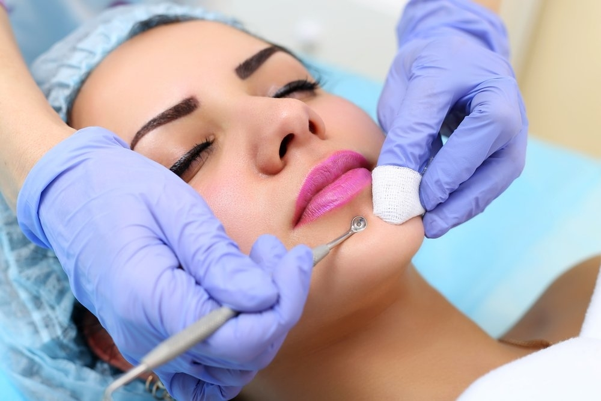
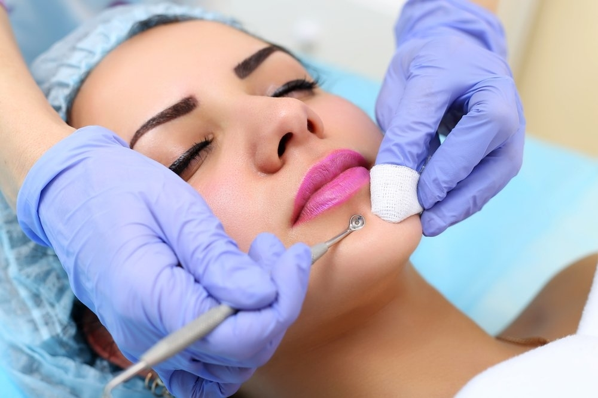

Зачем нужна чистка лица?
Кожа – самый большой орган человеческого тела, который обеспечивает его дыхание, обменные процессы, а также защищает от проникновения внутрь инфекций.
Однако кожа лица у людей бывает разной, и в зависимости от ее жирности по-разному функционируют и сальные, и потовые железы, в обилии находящиеся в толще
слоев кожи.
Забота о здоровье и красоте кожи лица начинается с очищения.
Ежедневные косметические процедуры не способны полностью очистить кожу от загрязнений. Нашей коже приходится ежедневно бороться с воздействием ветра,
солнца, пыли, и как результат: поры забиваются, кожа не дышит, стареет, образуются угри и комедоны – значит, нужна комплексная чистка лица!
С ее помощью вы устраните поверхностные загрязнения, отмершие клеточки эпидермиса, угри и черные точки, стимулируете обмен веществ и кровообращение.
Механический вид чистки лица
Описание процедуры.
Показаниями для проведения механической чистки лица является жирная кожа с забитыми порами, невоспаленная угревая сыпь.
Ее проводят пальцами, обернутыми стерильной салфеткой и ложечками «Унна» (это специальные приспособления для данной работы).
Перед началом чистки лица кожу аккуратно подготавливают: распаривают вапоризатором или же наносят порооткрывающий лосьон, тем самым поры открываются и
чистку можно произвести на глубоком уровне. При механической чистке лица происходит удаление комедонов в косметическом кабинете вручную. Для этой процедуры
используются специальные инструменты: ложечка Уна, игла Видаля, ситечко-шумовка, специальную ложечку для носа. Все инструменты стерильны. Именно требование
стерильности вынуждает проводить механическую чистку не дома перед зеркалом, а в косметическом кабинете. После чистки лица необходимо успокоить и
дезинфицировать кожу, а также сузить поры. Для дезинфекции используется инфракрасная лампа, дарсонвализация (воздействие с помощью электрического тока),
а также маски, которые дают и успокаивающий, и противовоспалительный эффект, например, на основе глины.
Лечебная глина, обработанная специальным образом, впитывает излишки кожного сала, стягивает поры, снимает воспаление, а также выравнивает цвет кожи.
Для того чтобы дополнительно успокоить кожу, используют также массаж (например, криомассаж, который дополнительно сужает поры и стимулирует кровообращение).
После чистки нельзя умываться как минимум 12 часов.
В течение 2-3 дней также следует протирать лицо не водой, а спиртосодержащим лосьоном. Корочки, которые появились на пораненных порах, нельзя срывать,
иначе на этих местах могут образоваться рубцы. В течение 2-3 дней нельзя купаться и загорать, в том числе и в солярии, иначе может появиться нежелательная
пигментация. Вообще после механической чистки поберегите кожу – дайте ей прийти в себя.